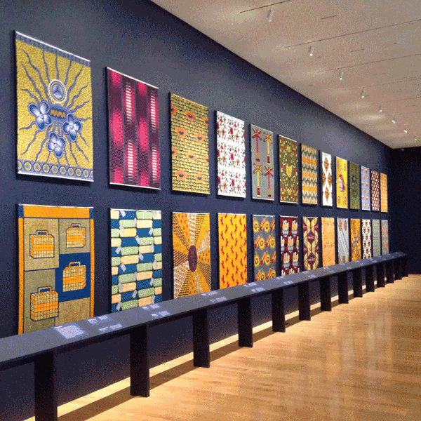
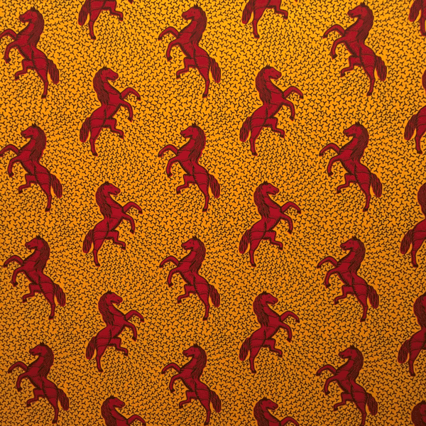
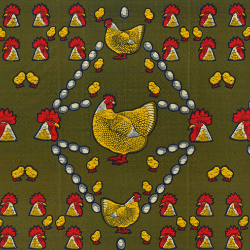
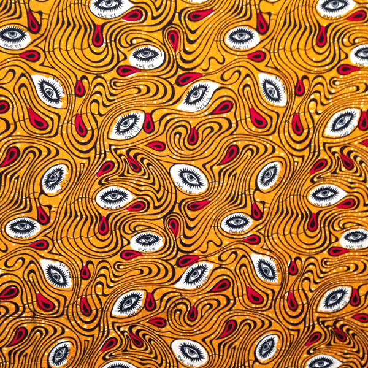
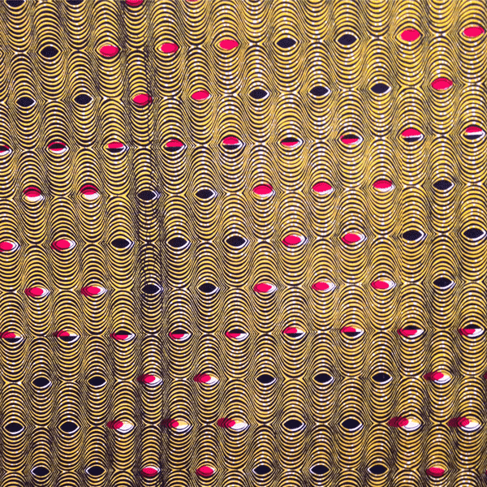
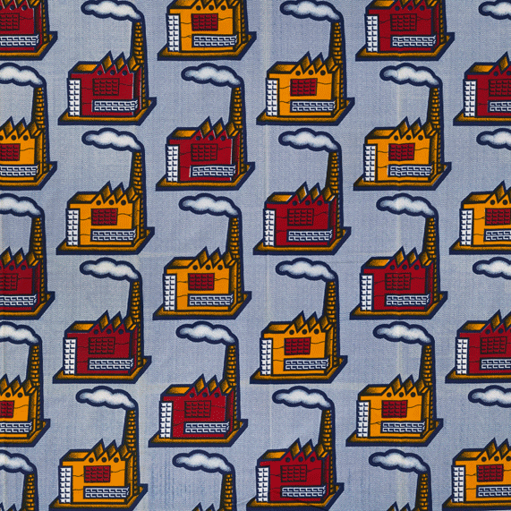
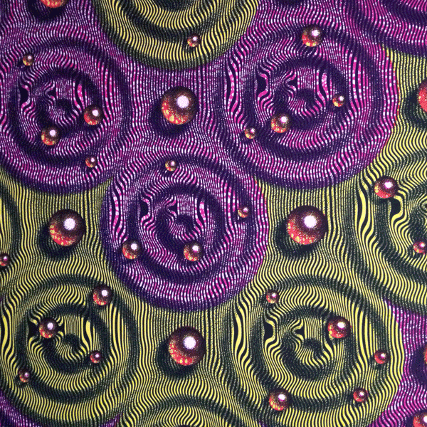
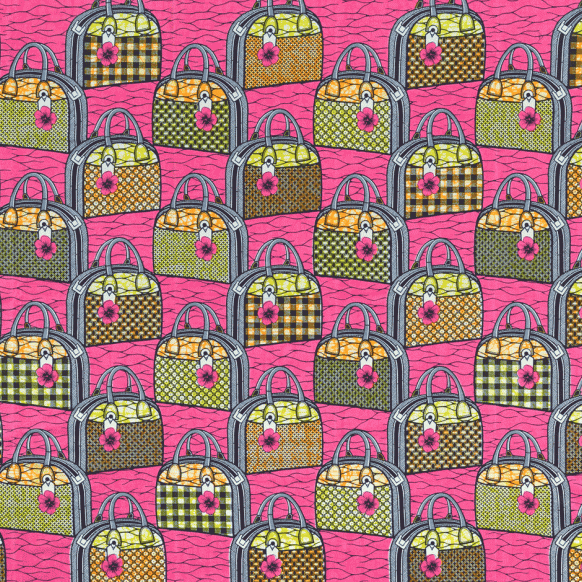

Vlisco:
African Patterns on a Global Stage
Discover how the Dutch company Vlisco became one of the most influential textile brands in West and Central African fashion and a design inspiration around the world. This exhibition explores the company’s most enduring designs and follows the creation of a new textile.

Joan Spain Gallery
Perellman Building
Philadelphia Museum of Art.

Designed by Haarlemsche Katoen Maatschappij, Haarlem Cotton Company. 1930.

Designed by Ted van de Ven, Vlisco. 1952.

Designed by Marjo Penninx, Vlisco, 2008.

Designed by Nico Verbart, Vlisco, 2005.

Designed by Ted van de Ven, Vlisco. 1952.

Designed by Nico Verbart, Vlisco, 2005.

Designed by Marjo Penninx, Vlisco, 2008.